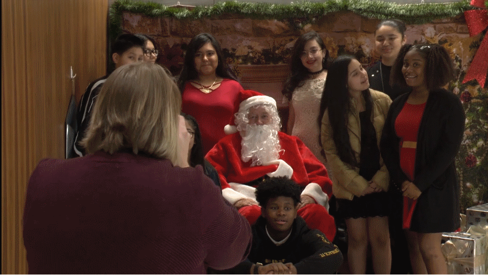

Hope for Children Annual Gala 2019:
What is the Hope for Children Annual Gala? The Hope for Children Annual Gala is a charity social occasion with stunning entertainment, events and special performances which bring large numbers of guests. You may experience a refreshing music filled evening at the Hope for Children Annual Gala.
What should you expect at the Gala? The guests are given opportunities to enjoy an evening of socializing, entertainment, food and drink, and raising funds for Hope for Children Foundation. Usually, the guests will be entertained with an evening of singing and music from a very exciting children’s choir. Just before the children begin singing, we will briefly hear a few special voices from people working for companies that donate to nonprofits through their specialized workplace giving campaigns. We welcome their sincere expressions of happiness from serving children, families, this community, and this nonprofit charity, Hope for Children Foundation. You will also hear from the charity organizers and other people involved with companies that give back to the community by donating to Hope for Children Foundation.
Gala Awards
The following Awards will be announced during the 2020 Hope for Children Annual Gala: Hope for Children Award; Outstanding Children’s Choir Award; Young Professionals Volunteer of the Year Award; Community Volunteer; Corporate Volunteer; and Group of the Year, in addition to recognizing the Director of the special children’s choir. All of this takes place and much more.
Hope for Children Foundation gives back to the community on a daily basis, not just at Christmas time. It is an honor for Hope for Children Foundation, to serve the children in this community and throughout the nation. On behalf of the children we serve, we thank everyone involved in the 2019 Hope for Children Annual Gala. You really care!
Stand Strong for Children
It is important to connect children, families, you, organizations and systems to understand how we all can take steps to prevent childhood adversity, facilitate healing from trauma, and promote resilience in children.
Help Hope for Children Foundation empower children, families, you and communities with access to best practices so we all can implement the best strategies that work best to protect our children and families from the long-term impacts of early trauma.
You can absolutely help change the future for children throughout this nation by taking what science has made clear and implementing proven strategies toward the best possible outcomes for children and our families.
The mental health of every individual is very important. Hope for Children Foundation is committed to children, teens and adults by celebrating precious lives through education. One of the many ways Hope for Children Foundation reaches into the community is through supporting children and families at Christmas time, through the Hope for Children Annual Gala.
Most of us have experienced something sad during the Christmas Holidays. That sadness for some can grow into something more serious if not dealt with accordingly. It is our goal with the Hope for Children Annual Gala, to be that safety net of care and love needed during those times. Through research and experience, we have found day to day living in which circumstances develop can add to existing complications manifesting into mental health issues. When such mental health issues exist, we need the comfort of one another. We do not need to be isolated.
So many situations related to mental health may lead to isolation; such as the death or illness of a loved one; financial difficulties may arise causing overwhelming isolation; social situations may arise needing the warmth of a true friend or family member to be there for you – but yet that “friend” or family member may not be there for you. Help us combat the epidemic of isolation. Isolation is among the tragic ironies of modern life. People have never had so many ways to connect, yet more and more of us feel disconnected, possibly lonely and isolated. Who is at risk of loneliness? Everyone is at risk, loneliness does not discriminate against anyone.
According to the World Health Organization, 450 million people world-wide suffer from some mental-health condition at any given moment. Studies show one in five adults will experience mental illness in the course of a year, in the United States. Over twenty-one percent of children ages thirteen to eighteen suffer from a serious mental-health condition at some point in the delicate developmental window; thirteen percent among kids ages eight to fifteen are at risk of mental illness.
Further, the social cost of all of this is overwhelming. Seventy percent of kids in the juvenile-justice system suffer from at least one such condition. The dollar cost of so much illness is staggering. World-wide, more than $2.5 trillion per year is spent on mental-health care, a figure that’s on track to accurately measure $6 trillion by the year 2030, according to the National Institute of Mental Health. Six trillion dollars will be spent willingly to help those in need. Mental illness continues to touch too many, and the treatments and cures, unfortunately will not reach everyone in need.
Support Hope for Children Annual Gala and Hope for Children Foundation
With your generous support we can reach children and families who may not receive any help except through our efforts. Please place Hope for Children Foundation on your charity watch list and give generously today. What charities give the most? We certainly are among the leaders of this group by giving back to children and families throughout the United States. Make a significant difference in the lives of children today, join us now.